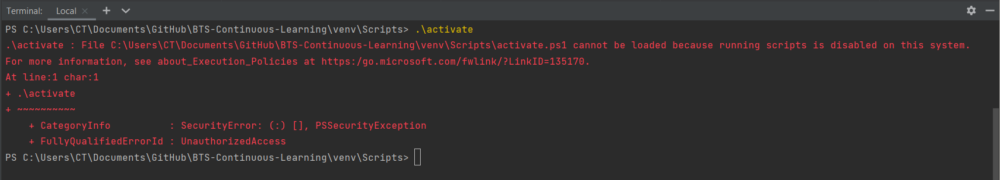
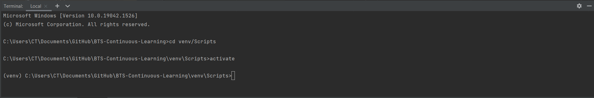

Initial Setup & Maintenance üõ†Ô∏è
Contents
Initial Setup & Maintenance üõ†Ô∏è¬∂
The tech stack that I had to create and deploy this book was:
A Windows environment
PyCharm Community Edition
GitHub Desktop
Some mistakes I made in setup include:
Installing and running Jupyter Book on Python 3.9
Trying to install a g-zipped version of Python 3.7 to install the latest version (Python 3.7.12)
Navigating to the gh-pages branch
Some challenges I faced in setup include:
Deploying the sample book
Activating a virtual environment in PyCharm after navigating between Git branches
Let’s go through these mistakes in more detail!
Installing and running Jupyter Book on Python 3.9¶
The latest version of Python today is Python 3.10, but I routinely use Python 3.9 on my local machine.
I managed to install jupyter-book and successfully
ran the command:
jupyter-book create mynewbook/
So imagine the surprise I experienced, following this tutorial when I ran
jupyter-book build book/
and got this problem.
I wish I started by reading the warning here and then navigating to Working on Windows
Lesson 1:
Learn how to set up Jupyter Book based on your OS environment.
Trying to install the latest version of Python 3.7¶
When I found that Python 3.7 was required, my natural inclination was to go here and zoom in to Python 3.7.12:
It came as a .tgz which I unzipped on Administrator
Windows cmd with the following code:
tar -xvzf C:\Users\CT\Downloads\Python-3.7.12.tgz -C C:\Users\CT\Downloads
When I unzipped it, I felt stuck because I couldn’t activate it without a crazy amount of searching.
There had to be a better way.
So I decided to search for versions of Python 3.7
that had a .exe file for Windows
here
settling on Python 3.7.9:

I clicked the Download Windows x86-64 executable
installer because my machine is 64-bit. I installed
it with default installation instructions, and I was
able to create a virtual environment venv in my project
that ran on Python 3.7 as follows:
I changed to the main directory, BTS-Continuous-Learning
then ran
virtualenv -p python3.7 venv
All that’s left is activating venv and checking that
the correct version of Python is running with the code
below:
py --version
Finally, in Github Desktop after committing the files created with
jupyter-book create mynewbook/
I added all venv files to .gitignore.
Lesson 2:
Use a .exe installer to install Python on your
machine; avoid zipped files.
Activating a virtual environment in PyCharm¶
The first time (when the only Git branch that I had
was main, it was easy enough to activate the virtual
environment in PyCharm. However, when I navidated to the
gh-pages branch in GitHub Desktop, I started getting a
weird error in the terminal like
When I upgraded my PyCharm community Edition program, the error changed to this:

Following the suggestion, this happened:

So what was the solution?
I navigated first to the File menu, then clicked on
Settings resulting in the following screen:
I then navigated to Tools, then Terminal, and changed the
Shell path from Powershell’s path to cmd’s path like so:

Problem solved!

Work within the environment and clear the workspace with cls
command.
Lesson 3:
Use a cmd engine within Pycharm instead of Powershell to
activate the virtual environment.
Deployment of the site¶
Updating the book was easy enough with the jb build --all book/
command once the virtual environment was activated.
I then
Pushed any changes in
book,_staticandimagesfolders on themainbranch to remoteInstalled
ghp-importwith thepip install ghp-importcommandChanged into the directory containing the files with
cd books/commandCreated a
gh-pagesbranch (when the command ran the first time) or pushed the changes to thegh-pagesbranch with theghp-import -n -p -f _build/htmlcommand
Warning:
When running the ghp-import -n -p -f _build/html command,
DO NOT forget to add -n; the reason why is well explained
here
.
Initially, after deploying the page, I would navigate to the
gh-pages branch, but I realised that it was not necessary since
running the ghp-import -n -p -f _build/html command
automatically sends local changes to remote in the gh-pages
branch.